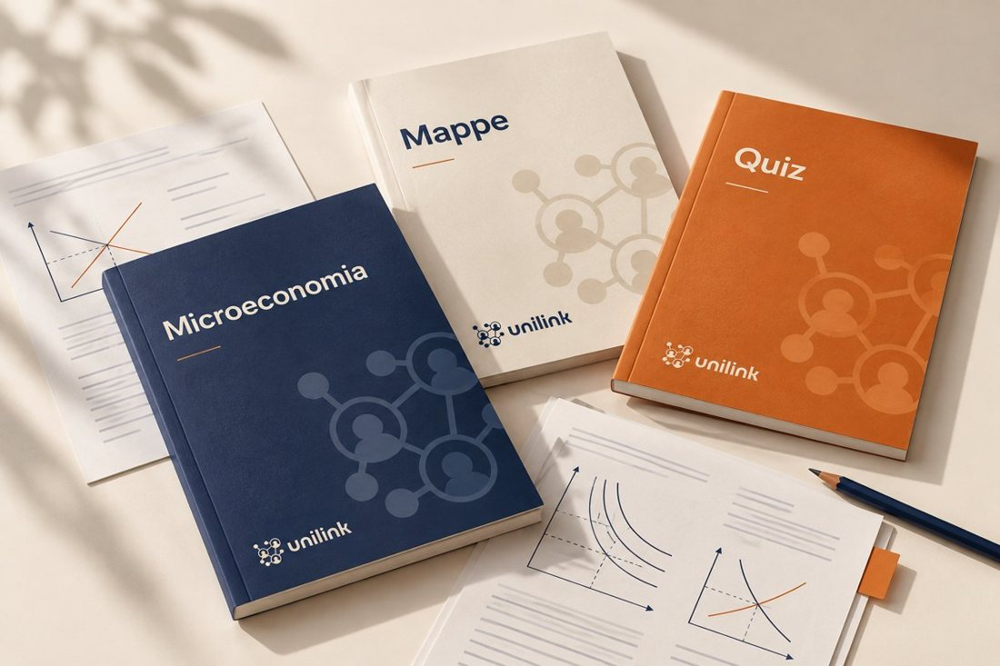

Da studenti, per studenti · Economia UniFi
Studia, orientati,


Studia, orientati,
scegli.
Appunti, mappe e quiz per gli esami di Economia UniFi, scritti da chi li ha appena dati. Poi Erasmus, magistrali e quello che viene dopo.

34 esamicon la dispensa completa
Aggiornata il 3 ottobre